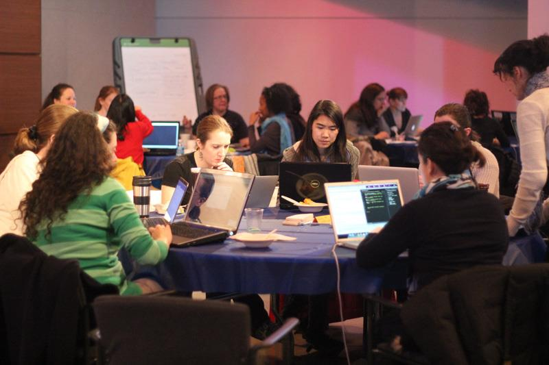

April 13, 2024 @ 11:00 am - April 13, 2024 @ 7:00 pm
Leadership Event - Guest Speaker
Join us for a Leadership Event featuring a distinguished Guest Speaker. This event is designed to provide valuable insights and strategies for enhancing leadership capabilities. Our Guest Speaker, known for their expertise in leadership development, will share practical advice and inspiring stories to help participants navigate the challenges of leadership effectively. Attendees can expect an engaging and informative experience, with opportunities for networking and connecting with like-minded professionals. Whether you're an aspiring leader or an experienced one looking to refine your skills, this event promises to be a valuable investment in your professional development journey.
April 13, 2024 @ 11:00 am - April 13, 2024 @ 7:00 pm
Hackathon - Social Good
Prepare to be part of a groundbreaking event - our Social Good Hackathon exclusively for women! This hackathon is a platform where women can showcase their skills and creativity in addressing pressing social issues. From tackling gender equality to promoting environmental sustainability, participants will collaborate and innovate to create impactful solutions. Whether you're a seasoned coder, designer, or passionate about social change, join us for a day of empowerment, collaboration, and making a real difference in our communities. Let's harness the power of technology and collective creativity to create a brighter, more inclusive future together.

April 15, 2024 @ 11:00 am - April 17, 2024 @ 7:00 pm
Women's Leadership Summit
The Women's Leadership Summit is a dynamic gathering that brings together women leaders from various industries to share insights, experiences, and strategies for success in leadership roles. Through keynote speeches, panel discussions, and interactive workshops, attendees gain valuable knowledge and inspiration to advance their careers and make a positive impact in their organizations and communities. The summit provides opportunities for networking, mentorship, and collaboration, fostering a supportive environment for women to thrive professionally and personally. Whether you're a seasoned executive or emerging leader, this event offers invaluable resources and connections to help you reach your full potential.

April 20, 2024 @ 11:00 am - April 22, 2024 @ 7:00 pm
EmpowerHer Conference
The EmpowerHer Conference is a transformative event designed to inspire and empower women to reach their full potential. Featuring engaging speakers, interactive workshops, and networking opportunities, this conference equips attendees with the tools and confidence to pursue their goals and make a difference in their communities. From personal development sessions to discussions on entrepreneurship and leadership, the conference covers a wide range of topics relevant to women's professional and personal growth. Whether you're looking to advance in your career, start your own business, or simply connect with like-minded individuals, the EmpowerHer Conference provides a supportive and empowering environment to help you thrive.

May 22, 2024 @ 11:00 am - May 22, 2024 @ 7:00 pm
Women in Research and Healthcare Symposium
The Women in Research and Healthcare Symposium is a prestigious gathering dedicated to celebrating the achievements and contributions of women in the fields of medical research and healthcare. Through keynote presentations, panel discussions, and interactive workshops, the symposium addresses key issues such as gender equity in research, career advancement opportunities for women in healthcare, and the importance of diversity in medical research.